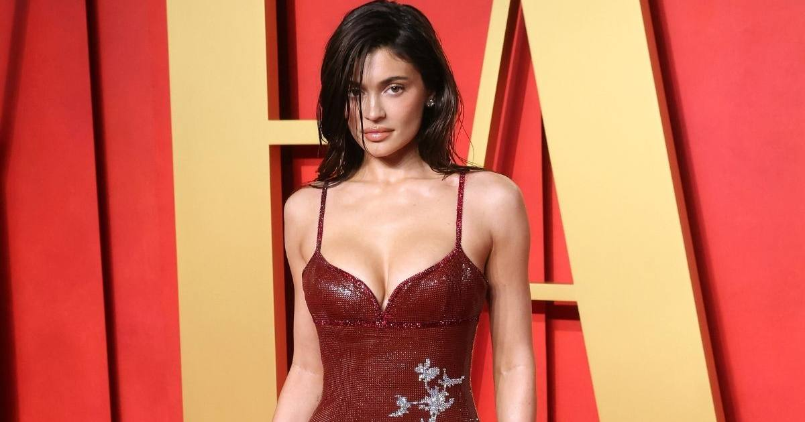

Kylie Jenner's $50 Million Fantasy Bra Shatters the Victoria's Secret Record
4,410 diamonds, 1,373 carats, a $22 million center stone — and fans arguing a career Angel should've worn it. The Fantasy Bra returned after eight years, and Kylie made history with it.

The crown jewel came back — and it brought a record with it.
Kylie Jenner made her surprise Victoria's Secret runway debut Sunday night wearing the $50 million Fantasy Bra — the most expensive in the show's history, and the first since 2018.
The piece
Designed with jeweler Jacob & Co., the bra is a "one-of-a-kind masterpiece": 4,410 natural diamonds totaling 1,373.39 carats, set in 18-karat gold with no fabric at all. The centerpiece is a 75.54-carat Fancy Vivid yellow diamond worth $22 million on its own. Fifteen artisans spent more than 1,000 hours building it from over 3,200 components, with a fringe of diamonds that swung as Jenner walked.
Founder Jacob Arabo told Vogue his vision was "a piece of high jewelry that could be worn as a bra. No fabric, only gold and diamonds."
The previous record: Gisele Bündchen's $15 million "Heavenly Star" bra from 2000. Kylie more than tripled it.
The controversy
Jenner is the first non-Angel to ever wear the Fantasy Bra — and longtime fans had feelings about it. "The Fantasy Bra has always meant something special to VS fans," one commenter wrote. "Putting her in the Fantasy Bra instead of a career runway model was such a missed opportunity."
VS chief creative officer Adam Selman called Jenner a "cultural powerhouse" whose reach goes "beyond fashion, beyond culture, beyond TV" — and with 380 million Instagram followers watching, the moment was engineered for circulation.
Jenner's own verdict, posted to Instagram Stories after: "Best Day Ever."